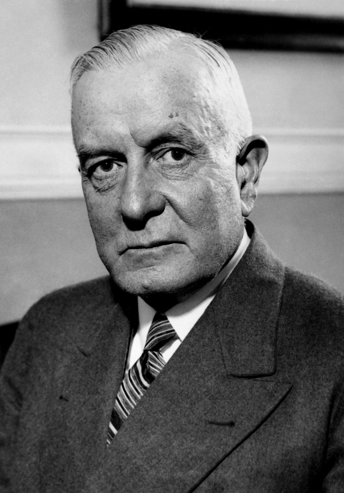

THOMAS J.WATSON SR
Thomas John Watson Sr. (February 17, 1874 – June 19, 1956) was an American businessman who served as the chairman
and CEO of IBM. He oversaw the company's growth into an international force from 1914 to 1956. Watson
developed IBM's management style and corporate culture from John Henry Patterson's training at NCR.

- BORN = FEB 17,1874
- DEATH = JUN 19,1956
- BORN = February 17,1874
- DEATH = JUNE 19,1956
| BORN |
DEATH |
| February 17,1874 |
JUNE 19,1956 |
click here for more info